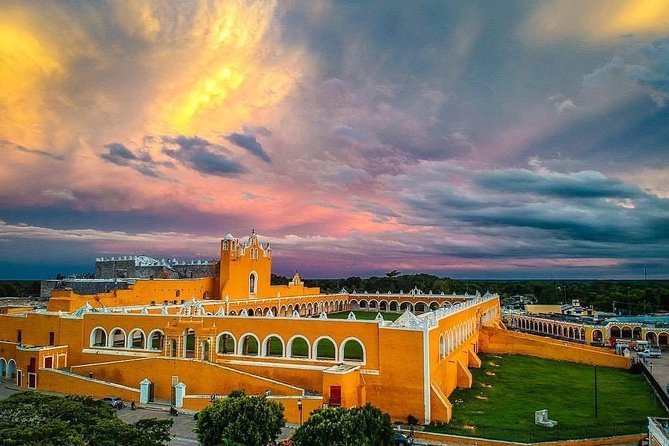

Actualmente, la mayoría de sus edificios y casas históricas están pintadas de amarillo y blanco por voluntad de autoridades y vecinos, lo que mantiene una imagen de elegancia y encanto de épocas pasadas que la singularizan y definen con aire señorial en el contexto regional.
En sus pulcras calles estampadas, calesas tiradas por caballos llevan al visitante por un recorrido de encanto por sus plazas, parques y sus históricos suburbios. De noche, la ciudad ofrece una experiencia singular, al contemplar una estrellada bóveda celeste recortada por los perfiles de sus pirámides, templos y casonas coloniales; sombras que parecen despertar de un sueño de centurias.
Con sus edificios en color amarillo y blanco, que recuerdan los colores de la bandera de la santa sede, y su monasterio dedicado a uno de los pilares de la Orden Franciscana, San Antonio de Padua, ahora es el centro mariano más importante para los católicos yucatecos.